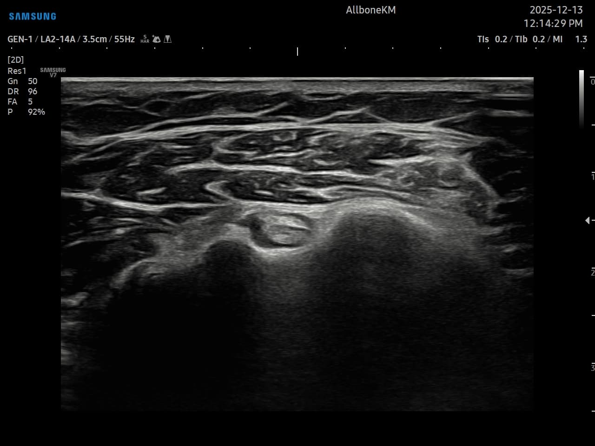

Date:
December 27, 2025
Subject:
Referral for Further Evaluation of Left Shoulder Arthritis
Patient:
49-year-old Female
1. Clinical History
- Onset: November 17, 2025
- Symptoms: The patient presents with persistent left shoulder pain, characterized by significant nocturnal pain and resting pain.
- Range of Motion (ROM): Markedly restricted in multiple planes, including abduction, flexion, extension, and external rotation. The clinical presentation is highly suggestive of a capsular involvement or inflammatory process.
2. Physical Examination & Findings
- Pain is localized to the anterior and lateral aspects of the left shoulder.
- The patient exhibits a capsular pattern of restriction, pointing towards advanced glenohumeral joint involvement or adhesive capsulitis.
3. Imaging Findings (Ultrasonography)
- Region: Left humerus bicipital groove (Intertubercular sulcus).
- View: Transverse sonographic image.
- Observations: The Long Head of the Biceps Brachii (LHBT) tendon was evaluated within the groove. Based on the sonographic features and clinical correlation, the patient was diagnosed with Left Shoulder Arthritis (Glenohumeral Arthritis).
Note: Possible tenosynovitis of the LHBT and associated synovial thickening were considered.
4. Assessment & Impression
- Primary Diagnosis: Left Shoulder Arthritis (Glenohumeral Osteoarthritis).
- R/O: Adhesive Capsulitis (Frozen Shoulder).
- R/O: Bicipital Tenosynovitis.

Lt shoulder, transverse (Long Head of the Biceps Brachii tendon)